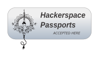

18 de Março de 2023
09:00
Campinas - SP
09:00
Campinas - SP
Clique no nome de uma atividade para mostrar detalhes.
| t0 | Garagem | |
|---|---|---|
| 08:30 | Credenciamento | |
| t1 | Salão Superior | |
| 09:00 | Abertura | |
| t2 | Salão Superior | Garagem |
| 09:15 | Kit básico para iniciação e Projetos em Astronomia para Hackers | Como consultar as principais bases de dados públicos em um só lugar |
| 09:45 | ||
| 10:15 | Open Source FPV | |
| 10:45 | Introdução à stack gráfica do Linux | |
| t3 | Salão Superior | Garagem |
| 11:15 | Terminedia: criando gráficos com Unicode no terminal de texto | Reproduzindo Som com o ESP32 + NuttX |
| 11:45 | Desenhando com Python e py5 | |
| 12:15 | ||
| 12:45 | Primeiros passos com self-hosting | |
| t4 | Cozinha | |
| 13:15 | Almoço | |
| t5 | Salão Superior | Garagem |
| 14:15 | Como fazer um Workshop de Contribuição Open Source | Bonsai 101 |
| 14:45 | Tratamento de DDoS | |
| 15:15 | Afinal o que são interfaces em programação? | |
| 15:45 | AppSec é para os brabos! | |
| t6 | Salão Superior | Garagem |
| 16:15 | Engenharia Reversa do jogo Another World de Eric Chahi (online) | Produção de Kombucha |
| 16:45 | ||
| 17:15 | ||
| 17:45 | Como usar o ChatGTP para ser seu Copiloto no trabalho? | |
Princípios Básicos e Dicas para iniciação em astronomia
Nunca foi tão fácil acessar e analisar dados públicos. No workshop, vamos aprender a acessar e explorar mais de 90 conjuntos de dados públicos pelo repositório da Base dos Dados no Google Cloud, usando apenas algumas símples consultas SQL. No final da atividade, você terá base para analisar e criar visualizações com dados públicos usando o BigQuery e o Google DataStudio.
A atividade é uma talk expositiva com o objetivo de ensinar como as pessoas começar a hospedar suas próprias aplicações em casa ou na nuvem
FPV é a sigla para first person view (visão na primeira pessoa), o que significa que a visão do piloto é colocada diretamente na perspectiva da câmera. É possível voar quadricopteros usando FPV e tecnologias desenvolvidas abertamente. Essa palestra apresenta o universo Open Source do FPV para quem gosta de hackear tecnologias embacardas
Introduzir os participantes sobre todas as etapas que acontecem para renderizar aplicações usando GPUs e estimular a contribuição nos projetos Open Source envolvidos.
Será apresentado o projeto "terminedia": um Framework em Python para desenhar e criar aplicações no terminal de texto (TUI: text-user-interface). É um projeto criado e mantido pelo facilitador, que inclui inúmeras formas de interatividade no terminal de texto, como entrada do teclado sem
Neste workshop será feita uma breve introdução ao NuttX OS - que é um sistema operacional de tempo real (RTOS) compatível com POSIX. Para tal, será utilizado o ESP32 (os convidados poderão acompanhar a atividade caso possuam placa compatível) e notebook. Será explorada a interface I2S do ESP32 que, ligada a um codec de baixo custo, provê um sinal de áudio que pode ser reproduzido em qualquer amplificador de áudio. Finalmente, será demonstrada a capacidade de streaming de áudio não comprimido pela rede Wi-Fi, através de um servidor HTTP. Esta solução, então, demonstra a aplicação do NuttX + ESP32 como um dispositivo capaz de receber um streaming de áudio de alta definição e de reproduzi-lo.
Bate-papo com demonstração de ferramentas de desenho e programação criativa com Python. A pessoas participantes verão algumas possibilidades de usar um poderoso vocabulário gráfico e recursos de interatividade (eventos de teclado e mouse) com poucas linhas de Python. Vamos usar o Thonny.org IDE livre especialmente recomendado para quem está aprendendo Python.
Será feita uma palestra sobre o Chat GPT e como ele pode auxiliar na execução das nossas tarefas.
A equipe do LKCAMP realizou inúmeros eventos voltados ao ensinamento do processo de contribuição para projetos de Software Livre. Nesta palestra, gostaríamos de compartilhar um pouco sobre nossas experiências com esse tipo de evento!
Atividade de conceitos básicos da arte do bonsai, nesta atividade iremos pegar uma planta de viveiro e iniciar a transformação em um bonsai
Palestra expositiva com exemplos e cases reais
A ideia é apresentar uma palestra sobre interfaces fazendo fazendo uma ponte entre situações do mundo real, lógica formal, matemática e claro, programação, a fim de desmistificar o que são interfaces e como usamos elas no dia a dia.
Falaremos sobre appsec, o que é? O que não é? Será feito um overview sobre os pontos abordados dentro de AppSec. E o recado principal AppSec é cultura
O jogo Another World, de 1991, criado pelo artista e programador francês Eric Chahi, é um grande clássico e, na opinião de muita gente, uma obra de arte revolucionária na história dos jogos de computador. Assim como as obras de arte convencionais, acredito que a arte digital também merece a atenção e o estudo aprofundado e minucioso de suas origens e seu processo de desenvolvimento. Eu ainda não tenho certeza do conteúdo exato, pois estou ativamente trabalhando nesse projeto e provavelmente terei mais novidades fresquinhas na data da apresentação. Mas ao longo da última década me dediquei esporadicamente ao estudo da máquina virtual do Another World e na implementação de um conjunto de ferramentas para análise, assembly e disassembly de bytecode, decodificação de assets gráficos vetoriais, decompressão e recompressão de assets, etc. Gostaria de mostrar nessa atividade os avanços já conquistados e as possibilidades de desenvolvimento futuro desse trabalho de Arqueologia Digital.
O que será apresentado? Como produzir refrigerante em casa e os princípio para produzir outras bebidas de forma simples em casa tal qual gengibirra, aluá. Qual o formato? Hands-on Será apenas uma atividade expositiva ou teremos interação com as pessoas participantes? Expositiva com iteração com os participantes. O que as pessoas que participarem da sua atividade terão aprendido depois dela? Produzir Kombucha em casa e os princípios para fazer outros fermentados.
A Tosconf é uma desconferência anual organizada pelo Laboratório Hacker de Campinas (LHC). Devido a pandemia de COVID-19 tivemos que adiar a quarta edição em 2020, mas este ano estamos de volta presencialmente.
O conteúdo da Tosconf é eclético; não há praticamente nenhuma restrição sobre os temas e tipos de atividades que podem ser apresentados (desde que não viole o nosso Código de Conduta).
Em anos anteriores contou com a presença de pessoas dos mais variados meios e vivências, de computação à artesanato, de segurança da informação à marcenaria, profissionais e curiosas, e, às vezes, até mesmo figuras míticas da computação.


 © Bruno Dilly
© Bruno Dilly © Bruno Dilly
© Bruno Dilly
A chamada de trabalhos está encerrada! Tivemos excelentes submissões e em breve traremos novidades sobre a programação!
A Tosconf[3] é organizada por pessoas voluntárias, associadas ou não ao Laboratório Hacker de Campinas. Para organizar um evento como esse precisamos de ajuda para tarefas como:
Se você se interessou e quer ajudar em um (ou mais) dessas tarefas, preencha o formulário no link a seguir que entraremos em contato e assim poderemos dividir melhor as tarefas para não sobrecarregar ninguém da organização.
QUERO SER UMA PESSOA VOLUNTÁRIA E AJUDAR A ORGANIZAR A TOSCONF[3]
Confira a agenda das edições anteriores seguindo os links abaixo:
Organização |
|
|  | |